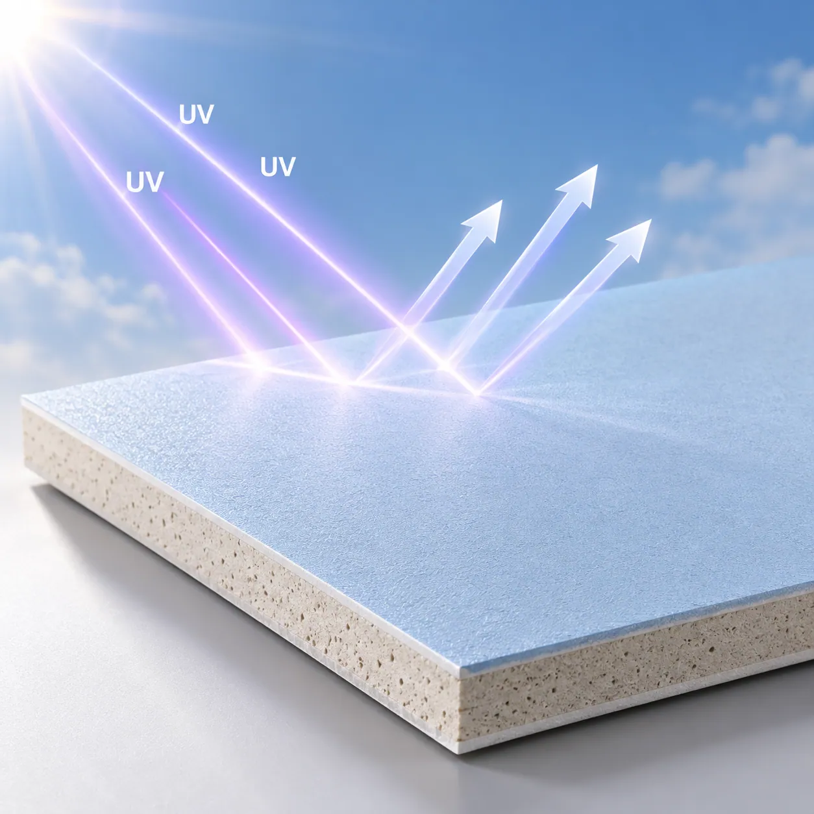
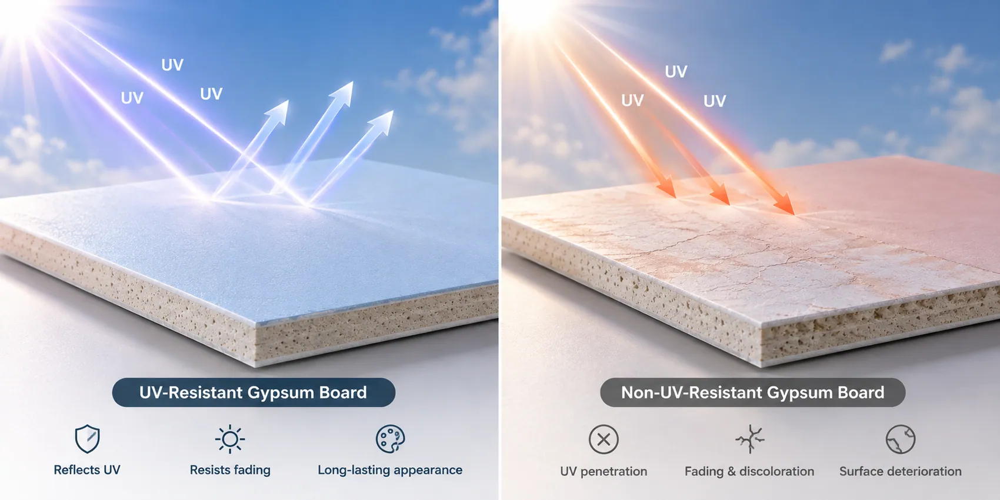
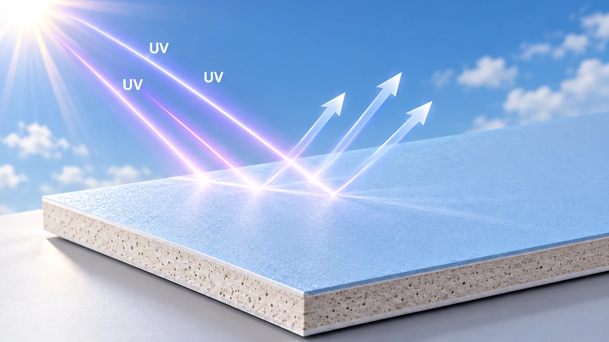
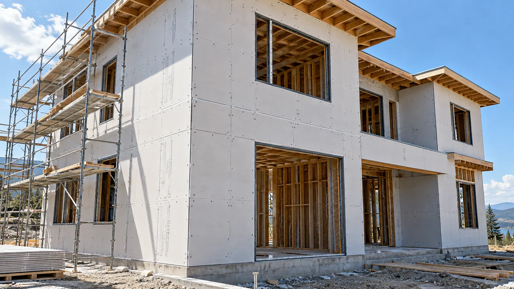
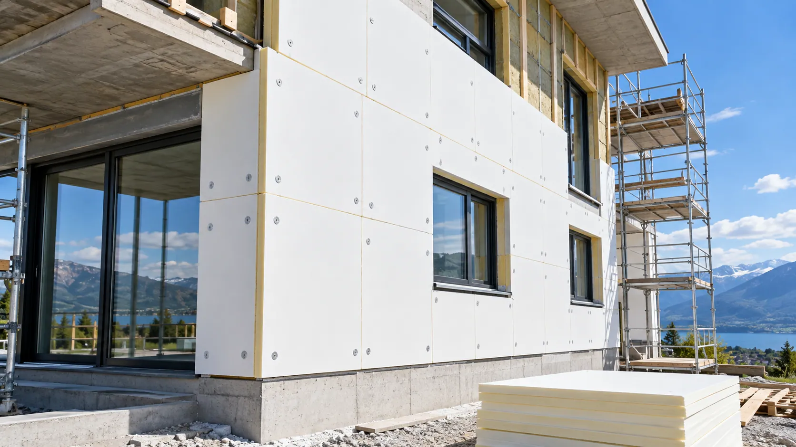
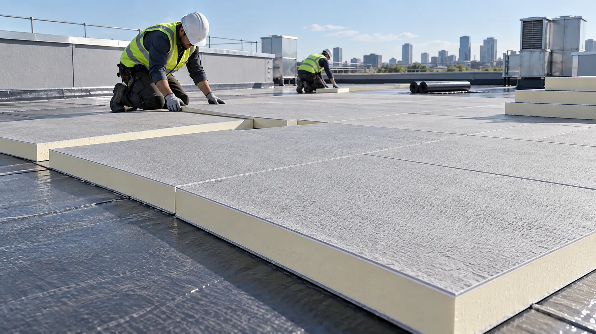

Fading
UV-sensitive surface coatings may discolor and create an inconsistent panel appearance.
UV-RESISTANT FIBERGLASS FACING SOLUTIONS
Built for Sun Exposure. Engineered for Surface Stability.
A UV-resistant coating on a stable fiberglass substrate for compatible gypsum and PIR/PUR panels. Confirm the grade against expected exposure, core bonding and finished-panel requirements.

WHEN SUNLIGHT BECOMES A CHALLENGE
Panels may encounter sunlight during transportation, storage, installation or use. Susceptible coatings can change under UV and temperature exposure.
UV-sensitive surface coatings may discolor and create an inconsistent panel appearance.
Chalking or embrittlement can reduce the integrity of susceptible coatings.
Repeated UV and temperature exposure may accelerate microcracks or local surface defects.
Deterioration of an exposed facing can affect the consistency of its surface protection.

ENGINEERED FOR UV RESISTANCE
UV resistance, moisture behavior and production compatibility require separate evaluation for the selected panel.
Formulated to help maintain coating integrity under specified aging conditions.
Controlled application helps reduce local variations in the protective surface.
Selected formulations can address both sunlight and moisture exposure requirements.
A stable base supports handling and integration with gypsum or PIR/PUR cores.
SEE THE DIFFERENCE
Select treatment for the actual exposure; general fiberglass or water-resistant grades do not establish UV durability.

A stable fiberglass surface for general panels; prolonged sunlight may require a UV-resistant formulation.

Designed to reduce liquid-water penetration. Water resistance alone does not establish long-term UV durability.

An engineered coating helps limit sunlight-related degradation under specified exposure conditions.
HOW IT WORKS
The fiberglass substrate carries the protective treatment; the core supplies the primary structural or thermal function.

A formulation intended to resist ultraviolet aging and maintain coverage and coating integrity.
The board core provides its main structural or thermal-insulation function.
The UV-resistant facing must be evaluated together with the underlying core to confirm interfacial adhesion, manufacturing compatibility, and the required finished-panel performance.
FIND YOUR FACING SOLUTION
Match the facing to the core, production process and intended exposure.
A direction for temporary outdoor exposure. Evaluate gypsum-slurry bonding, moisture resistance and complete-board requirements.
A facing for PIR/PUR wall and roofing boards requiring resistance to UV-related surface aging, subject to grade-specific exposure and installation requirements.
Selected coating characteristics can be evaluated where sunlight and moisture are both relevant.
TECHNICAL INFORMATION
Confirm the applicable test report before using a published aging figure or exposure period for a particular panel.
| Parameter | Specification |
|---|---|
| Product | UV-Resistant Fiberglass Coated Veil |
| Base Material | Fiberglass Veil |
| Surface Treatment | UV-Resistant Functional Coating |
| Color | Grade-Dependent / Customizable |
| Surface Finish | Uniform Coated Surface |
| UV Aging Resistance | Up to 6,000 h QUV* |
| Accelerated Aging Method | ASTM G154* |
| Outdoor UV Protection | Up to 6 Months* |
| Water Resistance | Available by Product Grade |
| Surface Reflectance | Grade-Dependent |
| Basis Weight | Customizable |
| Roll Width | Customizable |
| Compatible Core | Gypsum / PIR / PUR |
| Supply Form | Rolls |
| Customization | Width, Weight, Coating & Surface Properties |
UV aging figures and outdoor protection periods refer to GRECHO's published UV-resistant insulation-facing product claims. Actual applicability must be confirmed by product grade, test report, acceptance criteria, exposure conditions, and finished-panel construction. Accelerated aging hours do not represent a direct conversion into outdoor service life.
*Outdoor protection claims depend on the selected product grade, exposure conditions, and applicable validation.
APPLICATIONS
Review sunlight exposure within the complete building-envelope design.

Temporary construction exposure requires verification of gypsum bonding, weather resistance and permitted exposure conditions.

Evaluate the facing during transport, site storage and installation, with the intended protection layers and envelope requirements.

The facing may support surface stability during specified temporary exposure. The finished roof still requires its waterproofing membrane and other protective components.
FROM SAMPLE TO PRODUCTION
Use conditions relevant to your core and finished panel.
Share the core, expected sunlight, production conditions, dimensions and technical targets.
Check the coating, color, material structure and UV-aging documentation.
Evaluate bonding, handling and processing with your gypsum or PIR/PUR manufacturing process.
Agree the grade, roll dimensions, coating and performance requirements after material and panel evaluation.
FAQ
No. QUV is an accelerated laboratory method. The relationship depends on UV intensity, temperature, humidity, location and other exposure conditions.
The up-to-six-month claim concerns selected insulation-facing products. Verify the specific panel using applicable test data, construction conditions and installation requirements.
For gypsum, evaluate bonding and finished-board requirements. For PIR/PUR, confirm compatibility with the foam formulation and lamination process.
LET'S FIND YOUR SOLUTION
Discuss a grade and supporting evidence for your panel structure, production process and expected exposure.